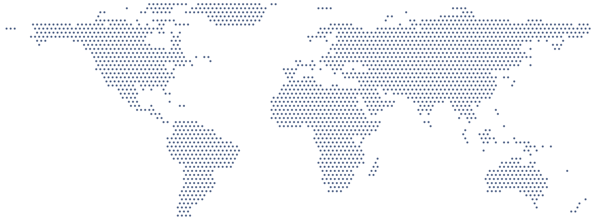

The investment decision layer for your fund
Make better bets and don’t leave millions on the table.
Patomy reads every deck, remembers every call, and checks each new deal against your thesis in minutes, with the evidence behind every finding. Catch more winners. Decide faster. Keep every reason.
Run one of your dossiers through Patomy and compare it with your own assessment.
The problem
Fun fact: we count cards. You don’t.
You’ve seen thousands of companies and remember almost none of them.
Your screening takes weeks, so the best founders sign with someone faster. And the deals you never saw? Someone else saw them.
The startup you forgot is closing its round right now. Not with you.
Patomy counts the cards for you.


The solution
Patomy counts the cards for you.
Patomy finds the deals, checks them against your thesis and remembers why you said yes or no. See every hand. Remember every call.
-
01 / Find
Automated scouting
We show you who’s raising now and worth your time. Before anyone else calls them.
-
02 / Check
Eligibility you can prove
Every deck checked against your rules in minutes. Red, orange or green, each finding linked to its source.
-
03 / Decide
Decisions you can defend
You make the call; we record what was known, who decided and why. Any decision replayable for an auditor or an LP.
-
04 / Remember
Memory that stays home
Every hand you’ve played, remembered for the whole team. Inside your fund, never trained on, never shared.
“We already use LLMs”
Everyone at the table has a chatbot. Professionals count cards.
Ask a ChatGPT wrapper twice, get two answers. Ask Patomy, get the same answer with its source, every time.
| Your vibe-coded tool | Patomy | |
|---|---|---|
| Same deck, same answer | Changes every time you ask | Same deterministic result, every time |
| Method | A clever prompt | Nine scalpels, built the way ICs dissect a company |
| Evidence | A confident summary | Every finding linked to the page it came from |
| Memory | No institutional memory | Remembers every deal, every call and why |
| Your data | Sent to public model | Stays inside your fund. Never trained on |
| The legwork | Your prompt, copy, paste | Agents scout, read and chase gaps. You decide |
Automated scouting
We see the cards before they’re dealt.
Patomy picks up newly incorporated startups and emerging signals as they appear, screens each one against your mandate and puts the ones worth a first call on top.

Newly registered · Maastricht
Medtech · Fits your mandate
- Newly incorporated
- Fits your mandate
What each card solves
You have played these hands before.
01 · Decision layer
Your rules live in people’s heads, so every analyst applies them differently.
Completeness and compliance checks are deterministic: your fund’s rules, applied the same way to every case, with the evidence for each finding in view.

02 · Auditability
The board asked why you passed, and the answer was in an old inbox.
Every finding links to its source and every override is logged with a reason. Any decision can be replayed exactly as it was made.

03 · Shared memory
You called a colleague to remember a case from three years ago.
Patomy keeps every company, claim, objection and decision. It finds related cases by meaning, even when they look nothing alike, and the knowledge stays when people leave.

Security & control
Your data stays your fund's
-
Never used for training
Your documents never train models or inform another fund.
-
Human in control
No automatic approvals or rejections.
-
Separated per organisation
Each fund's data and rules are kept apart.